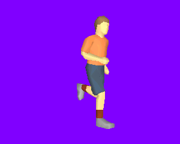
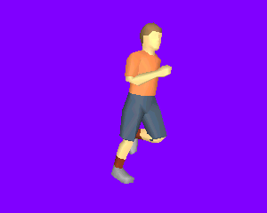
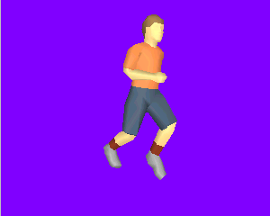
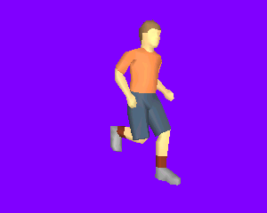

SkinnedBiped.h
The scene graph represents a boy character (only vertex colored, no textures) that goes through a running animation cycle. The nodes in the scene have keyframe data. Most of the nodes represent bones and the triangle mesh is a skin, so the mesh smoothly varies during the animation.
|  |  |
|  |  |